Daily Plan
Day 1 - 2024-06-19
-
Part 1: Harrison Ridge 1 Loop – 1.1 mi, 492 ft, 21 min
Park at Harrison Ridge 1 Loop (43.64481, -116.20831)
- Start on Harrison Ridge 1 (official trail) for 1.1 mi
-
Part 2: Crestline Trail 4 Loop – 1.1 mi, 413 ft, 20 min
Park at Crestline Trail 4 Loop (43.63859, -116.16464)
- Start on Crestline Trail 4 (out-and-back) (official trail) for 0.9 mi
- Turn left onto Crestline Trail 3 (out-and-back) (official trail) for 0.2 mi
Warnings: Repeated segment 748; Repeated segment 749
-
Part 3: Crestline Trail 3 Loop – 9.2 mi, 2628 ft, 158 min
Park at Crestline Trail 3 Loop (43.67092, -116.17699)
- Start on Crestline Trail 3 (official trail) for 0.1 mi
- Turn right at Junction (Crestline Trail 3 × Crestline Trail 2) onto Crestline Trail 2 (official trail) for 0.5 mi
- Turn right at Junction (Crestline Trail 2 × Crestline Trail 1) onto Crestline Trail 1 (official trail) for 0.8 mi
- Turn straight onto #4 8th Street Motorcycle (road) for 0.0 mi
- Turn left onto East Sunset Peak Road (road) for 0.0 mi
- Turn right onto road_167149 (road) for 0.0 mi
- Turn right onto East Sunset Peak Road (road) for 0.0 mi
- Turn right onto None (connector trail) for 0.6 mi
- Turn left onto Bob's Trail 1 (official trail) for 0.4 mi
- Turn right onto Highlands Trail 2 (official trail) for 0.6 mi
- Turn left onto Highlands Trail 1 (out-and-back) (official trail) for 2.1 mi
- Turn left at Junction (Highlands Trail 1 × Urban Connector 1) onto Urban Connector 1 (out-and-back) (official trail) for 2.5 mi
- Turn right onto Highlands Trail 1 (official trail) for 1.1 mi
Warnings: Repeated segment 799; Repeated segment 906
- Drive to next trailhead – 15.3 min
-
Part 5: Dry Creek Trail 1 Loop – 0.6 mi, 315 ft, 11 min
Park at Dry Creek Trail 1 Loop (43.69146, -116.18209)
- Start on Dry Creek Trail 1 (official trail) for 0.6 mi
-
Part 6: 15th St. Trail 1 Loop – 0.5 mi, 190 ft, 8 min
Park at 15th St. Trail 1 Loop (43.64073, -116.20562)
- Start on 15th St. Trail 1 (official trail) for 0.5 mi
fits budget
Rationale: Includes drive transfers between trail groups.
- Total Distance: 12.5 mi
- New Distance: 7.3 mi
- Redundant Distance: 5.2 mi (42% )
- Redundant miles (post-optimization): 5.2 mi
- Total Elevation Gain: 4039 ft
- Redundant Elevation Gain: 1457 ft (36% )
- Drive Time: 15 min
- Run Time: 221 min
- Total Time: 236 min
- Number of Activities: 5
- Number of Drives: 1
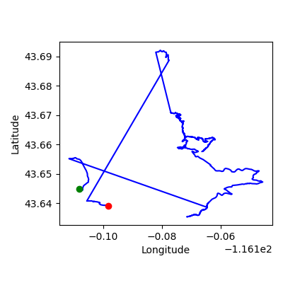
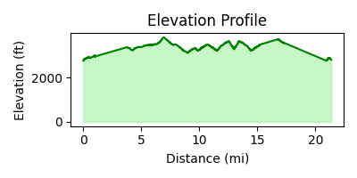
Day 2 - 2024-06-20
-
Part 1: Gold Finch 1 Loop – 0.7 mi, 98 ft, 11 min
Park at Gold Finch 1 Loop (43.63890, -116.19437)
- Start on Gold Finch 1 (official trail) for 0.2 mi
- Turn straight onto Gold Finch 2 (out-and-back) (official trail) for 0.2 mi
- Turn straight onto Gold Finch 1 (official trail) for 0.2 mi
Warnings: Repeated segment 790; Repeated segment 791
-
Part 2: Gold Finch 1 Loop – 2.2 mi, 548 ft, 36 min
Park at Gold Finch 1 Loop (43.64250, -116.18410)
- Start on Gold Finch 1 (official trail) for 0.2 mi
- Turn left onto road_132062 (road) for 0.0 mi
- Turn left onto North Sunset Peak Road (road) for 0.0 mi
- Turn right onto foot_connector (road) for 0.0 mi
- Turn left onto Lower Hull's Gulch Trail 1 (official trail) for 0.2 mi
- Turn left at Junction (Lower Hull's Gulch Trail 1 × Lower Hull's Gulch Trail 2) onto Lower Hull's Gulch Trail 2 (official trail) for 0.0 mi
- Turn right at Junction (Lower Hull's Gulch Trail 2 × Lower Hull's Gulch Trail 3) onto Lower Hull's Gulch Trail 3 (official trail) for 0.3 mi
- Turn straight onto Lower Hull's Gulch Trail 4 (out-and-back) (official trail) for 0.4 mi
- Turn straight onto Lower Hull's Gulch Trail 3 (official trail) for 0.3 mi
- Turn left onto Lower Hull's Gulch Trail 2 (official trail) for 0.0 mi
- Turn right onto Lower Hull's Gulch Trail 1 (official trail) for 0.2 mi
Warnings: Repeated segment 808; Repeated segment 809; Repeated segment 810; Repeated segment 811
-
Part 3: Kestral Trail 1 Loop – 0.9 mi, 279 ft, 15 min
Park at Kestral Trail 1 Loop (43.64114, -116.18322)
- Start on foot_connector (road) for 0.0 mi
- Turn left onto North Sunset Peak Road (road) for 0.0 mi
- Turn left onto road_122019 (road) for 0.0 mi
- Turn left onto road_122042 (road) for 0.0 mi
- Turn left onto road_122044 (road) for 0.0 mi
- Turn left onto foot_connector (road) for 0.0 mi
- Turn right onto Kestral Trail 1 (official trail) for 0.8 mi
-
Part 4: Mahalo Trail 1 Loop – 9.3 mi, 4035 ft, 168 min
Park at Mahalo Trail 1 Loop (43.74403, -116.08600)
- Start on Mahalo Trail 1 (official trail) for 3.6 mi
- Turn right at Junction (Mahalo Trail 1 × Ridge Rd 1) onto Ridge Rd 1 (ascent) (out-and-back) (official trail) for 2.0 mi – keep uphill
- Turn left onto Mahalo Trail 1 (official trail) for 3.6 mi
Warnings: Repeated segment 1204; Repeated segment 813
-
Part 5: Chickadee Ridge Trail 1 Loop – 0.1 mi, 13 ft, 2 min
Park at Chickadee Ridge Trail 1 Loop (43.64059, -116.19472)
- Start on Chickadee Ridge Trail 1 (official trail) for 0.1 mi
fits budget
Rationale: Routes selected based on proximity and time budget.
- Total Distance: 13.1 mi
- New Distance: 6.6 mi
- Redundant Distance: 6.5 mi (50% )
- Redundant miles (post-optimization): 6.5 mi
- Total Elevation Gain: 4974 ft
- Redundant Elevation Gain: 2356 ft (47% )
- Drive Time: 0 min
- Run Time: 233 min
- Total Time: 233 min
- Number of Activities: 5
- Number of Drives: 0
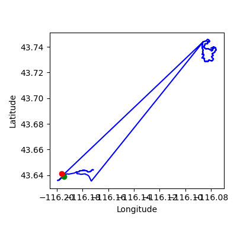
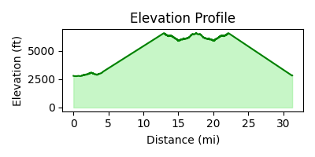
Day 3 - 2024-06-21
- Drive to next trailhead – 13.0 min
-
Part 2: Heroes Trail 2 Loop – 1.7 mi, 1010 ft, 32 min
Park at Heroes Trail 2 Loop (43.62362, -116.19091)
- Start on Heroes Trail 2 (official trail) for 0.8 mi
- Turn straight at Junction (Heroes Trail 2 × Heroes Trail 1) onto Heroes Trail 1 (out-and-back) (official trail) for 0.1 mi
- Turn straight onto Heroes Trail 2 (official trail) for 0.8 mi
Warnings: Repeated segment 797; Repeated segment 798
- Drive to next trailhead – 10.0 min
-
Part 4: Heroes Trail 2 Loop – 0.8 mi, 505 ft, 16 min
Park at Heroes Trail 2 Loop (43.62362, -116.19091)
- Start on Heroes Trail 2 (official trail) for 0.8 mi
-
Part 5: Heroes Trail 2 Loop – 1.9 mi, 686 ft, 31 min
Park at Heroes Trail 2 Loop (43.62148, -116.18149)
- Start on Heroes Trail 2 (official trail) for 0.8 mi
- Turn left onto road_122136 (road) for 0.0 mi
- Turn straight onto road_122135 (road) for 0.0 mi
- Turn right onto road_122134 (road) for 0.0 mi
- Turn left onto North VA Hospital Loop (road) for 0.0 mi
- Turn right onto East VA Hospital Loop (road) for 0.0 mi
- Turn right onto road_100588 (road) for 0.0 mi
- Turn left onto East VA Hospital Loop (road) for 0.0 mi
- Turn left onto road_248802 (road) for 0.0 mi
- Turn left onto road_132412 (road) for 0.0 mi
- Turn left onto road_132411 (road) for 0.0 mi
- Turn right onto road_110897 (road) for 0.0 mi
- Turn left onto North Mountain Cove Road (road) for 0.0 mi
- Turn left onto Elephant Rock Loop 1 (official trail) for 0.5 mi
-
Part 6: Three Bears Trail 1 Loop – 1.6 mi, 377 ft, 24 min
Park at Three Bears Trail 1 Loop (43.62780, -116.16750)
- Start on None (connector trail) for 0.1 mi
- Turn left onto North Mountain Cove Road (road) for 0.0 mi
- Turn left onto road_150942 (road) for 0.0 mi
- Turn right onto road_150943 (road) for 0.0 mi
- Turn right onto road_150944 (road) for 0.0 mi
- Turn left onto North Mountain Cove Road (road) for 0.1 mi
- Turn right onto North Mountain Cove Road (road) for 0.1 mi
- Turn right onto road_91660 (road) for 0.0 mi
- Turn left onto road_91659 (road) for 0.1 mi
- Turn left onto road_91658 (road) for 0.0 mi
- Turn right onto road_91652 (road) for 0.0 mi
- Turn left onto road_91649 (road) for 0.0 mi
- Turn right onto road_91647 (road) for 0.0 mi
- Turn left onto Three Bears Trail 1 (official trail) for 0.6 mi
- Drive to next trailhead – 10.9 min
-
Part 8: Ridge Crest 5 Loop – 0.2 mi, 79 ft, 4 min
Park at Ridge Crest 5 Loop (43.62886, -116.17053)
- Start on Ridge Crest 5 (official trail) for 0.2 mi
- Drive to next trailhead – 10.0 min
-
Part 10: Central Ridge Trail 2 Loop – 0.0 mi, 16 ft, 1 min
Park at Central Ridge Trail 2 Loop (43.62387, -116.16588)
- Start on Central Ridge Trail 2 (official trail) for 0.0 mi
- Drive to next trailhead – 10.0 min
-
Part 12: Central Ridge Trail 1 Loop – 0.8 mi, 62 ft, 13 min
Park at Central Ridge Trail 1 Loop (43.62367, -116.16520)
- Start on Central Ridge Trail 1 (official trail) for 0.8 mi
- Drive to next trailhead – 11.6 min
-
Part 14: Central Ridge Trail 1 Loop – 0.8 mi, 62 ft, 13 min
Park at Central Ridge Trail 1 Loop (43.62367, -116.16520)
- Start on Central Ridge Trail 1 (official trail) for 0.8 mi
- Drive to next trailhead – 13.2 min
-
Part 16: Ridge Crest 1 Loop – 0.6 mi, 79 ft, 10 min
Park at Ridge Crest 1 Loop (43.62002, -116.16995)
- Start on Ridge Crest 1 (official trail) for 0.6 mi
- Drive to next trailhead – 15.5 min
-
Part 18: Central Ridge Spur 4 Loop – 0.1 mi, 26 ft, 2 min
Park at Central Ridge Spur 4 Loop (43.62110, -116.18086)
- Start on Central Ridge Spur 4 (official trail) for 0.1 mi
-
Part 19: Harrison Ridge 1 Loop – 15.3 mi, 6490 ft, 278 min
Park at Harrison Ridge 1 Loop (43.64481, -116.20831)
- Start on Harrison Ridge 1 (official trail) for 1.1 mi
- Turn left onto Harrison Hollow 2 (out-and-back) (official trail) for 1.5 mi
- Turn left onto Harrison Ridge 2 (official trail) for 0.1 mi
- Turn straight onto Who Now Loop Trail 4 (official trail) for 0.4 mi
- Turn right onto Kemper's Ridge Trail 3 (official trail) for 0.5 mi
- Turn straight onto Buena Vista Trail 4 (official trail) for 0.7 mi
- Turn straight at Junction (Buena Vista Trail 4 × Bob Smylie 1) onto Bob Smylie 1 (official trail) for 0.4 mi
- Turn right at Junction (Bob Smylie 1 × Bob Smylie 2) onto Bob Smylie 2 (out-and-back) (official trail) for 0.8 mi
- Turn left onto Bob Smylie 1 (official trail) for 0.4 mi
- Turn straight onto Buena Vista Trail 3 (official trail) for 0.2 mi
- Turn straight at Junction (Buena Vista Trail 3 × Buena Vista Trail 2) onto Buena Vista Trail 2 (official trail) for 0.1 mi
- Turn straight at Junction (Buena Vista Trail 2 × Buena Vista Trail 1) onto Buena Vista Trail 1 (official trail) for 0.3 mi
- Turn right at Junction (Buena Vista Trail 1 × Full Sail Trail 1) onto Full Sail Trail 1 (out-and-back) (official trail) for 1.4 mi
- Turn right onto Full Sail Trail 2 (out-and-back) (official trail) for 0.5 mi
- Turn right onto Buena Vista Trail 1 (official trail) for 0.3 mi
- Turn straight onto Buena Vista Trail 2 (official trail) for 0.1 mi
- Turn straight onto Buena Vista Trail 3 (official trail) for 0.2 mi
- Turn straight onto Buena Vista Trail 4 (official trail) for 0.7 mi
- Turn straight onto Kemper's Ridge Trail 2 (official trail) for 0.1 mi
- Turn straight onto Kemper's Ridge Trail 1 (out-and-back) (official trail) for 0.4 mi
- Turn straight onto Kemper's Ridge Trail 2 (official trail) for 0.1 mi
- Turn straight onto Kemper's Ridge Trail 3 (official trail) for 0.5 mi
- Turn straight onto Who Now Loop Trail 1 (official trail) for 0.1 mi
- Turn right onto Who Now Loop Trail 2 (out-and-back) (official trail) for 1.2 mi
- Turn straight onto Hippie Shake Trail 1 (out-and-back) (official trail) for 1.0 mi
- Turn straight onto Who Now Loop Trail 1 (official trail) for 0.1 mi
- Turn straight onto Kemper's Ridge Trail 4 (out-and-back) (official trail) for 0.2 mi
- Turn right onto Who Now Loop Trail 4 (official trail) for 0.4 mi
- Turn straight onto Who Now Loop Trail 3 (out-and-back) (official trail) for 0.4 mi
- Turn left onto Harrison Ridge 2 (official trail) for 0.1 mi
- Turn straight onto Harrison Ridge 1 (official trail) for 1.1 mi
Warnings: Repeated segment 1182; Repeated segment 1185; Repeated segment 1187; Repeated segment 1188; Repeated segment 1189; Repeated segment 1190; Repeated segment 1191; Repeated segment 722; Repeated segment 723; Repeated segment 724; Repeated segment 788; Repeated segment 789; Repeated segment 801; Repeated segment 802; Repeated segment 803; Repeated segment 804; Repeated segment 805; Repeated segment 913; Repeated segment 914; Repeated segment 915
over budget by 277.6 min; big effort after easier day; big effort after easier day; big effort after easier day; big effort after easier day; big effort after easier day; big effort after easier day; big effort after easier day; big effort after easier day; big effort after easier day; big effort after easier day; big effort after easier day; big effort after easier day; big effort after easier day; big effort after easier day; big effort after easier day; big effort after easier day; big effort after easier day; big effort after easier day; big effort after easier day; big effort after easier day; big effort after easier day; big effort after easier day; big effort after easier day; big effort after easier day
Rationale: Includes drive transfers between trail groups. Longer effort scheduled after an easier day.
- Total Distance: 23.8 mi
- New Distance: 11.4 mi
- Redundant Distance: 12.4 mi (52% )
- Redundant miles (post-optimization): 12.4 mi
- Total Elevation Gain: 9393 ft
- Redundant Elevation Gain: 4895 ft (52% )
- Drive Time: 94 min
- Run Time: 424 min
- Total Time: 518 min
- Number of Activities: 11
- Number of Drives: 8
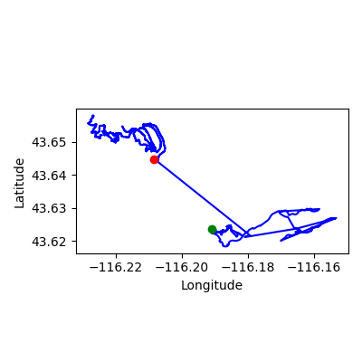
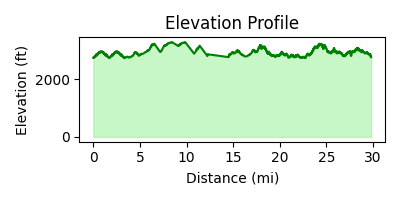
Day 4 - 2024-06-22
- Drive to next trailhead – 13.5 min
-
Part 2: Chickadee Ridge Trail 2 Loop – 0.5 mi, 62 ft, 8 min
Park at Chickadee Ridge Trail 2 Loop (43.64302, -116.18668)
- Start on Chickadee Ridge Trail 2 (official trail) for 0.5 mi
- Drive to next trailhead – 11.4 min
-
Part 4: Red Cliffs 2 Loop – 2.5 mi, 125 ft, 41 min
Park at Red Cliffs 2 Loop (43.64355, -116.18035)
- Start on Red Cliffs 2 (official trail) for 0.4 mi
- Turn right onto Red Cliffs 1 (out-and-back) (official trail) for 1.8 mi
- Turn left onto Red Cliffs 2 (official trail) for 0.4 mi
Warnings: Repeated segment 834; Repeated segment 835
- Drive to next trailhead – 13.1 min
-
Part 6: Crestline Trail 2 Loop – 0.5 mi, 115 ft, 8 min
Park at Crestline Trail 2 Loop (43.64340, -116.15800)
- Start on Crestline Trail 2 (official trail) for 0.5 mi
-
Part 7: Crestline Trail 2 Loop – 2.1 mi, 732 ft, 37 min
Park at Crestline Trail 2 Loop (43.65111, -116.14700)
- Start on Crestline Trail 2 (official trail) for 0.5 mi
- Turn right at Junction (Crestline Trail 2 × Crestline Trail 1) onto Crestline Trail 1 (official trail) for 0.8 mi
- Turn straight onto #4 8th Street Motorcycle (road) for 0.0 mi
- Turn left onto Corrals Trail 1 (official trail) for 0.7 mi
- Drive to next trailhead – 11.3 min
-
Part 9: Lower Hull's Gulch Trail 5 Loop – 1.4 mi, 617 ft, 26 min
Park at Lower Hull's Gulch Trail 5 Loop (43.64709, -116.14611)
- Start on Lower Hull's Gulch Trail 5 (official trail) for 1.4 mi
- Drive to next trailhead – 14.8 min
-
Part 11: Crestline Trail 1 Loop – 0.8 mi, 279 ft, 14 min
Park at Crestline Trail 1 Loop (43.64664, -116.15023)
- Start on Crestline Trail 1 (official trail) for 0.8 mi
- Drive to next trailhead – 16.8 min
-
Part 13: Femrite's Patrol 1 Loop – 0.7 mi, 72 ft, 11 min
Park at Femrite's Patrol 1 Loop (43.64754, -116.12664)
- Start on Femrite's Patrol 1 (official trail) for 0.7 mi
-
Part 14: Seaman Gulch Trail 2 Loop – 0.3 mi, 135 ft, 5 min
Park at Seaman Gulch Trail 2 Loop (43.68894, -116.28350)
- Start on Seaman Gulch Trail 2 (official trail) for 0.3 mi
fits budget; easier day to recover after yesterday’s long run; easier day to recover after yesterday’s long run; easier day to recover after yesterday’s long run; easier day to recover after yesterday’s long run; easier day to recover after yesterday’s long run; easier day to recover after yesterday’s long run; easier day to recover after yesterday’s long run; easier day to recover after yesterday’s long run; easier day to recover after yesterday’s long run; easier day to recover after yesterday’s long run; easier day to recover after yesterday’s long run; easier day to recover after yesterday’s long run; easier day to recover after yesterday’s long run; easier day to recover after yesterday’s long run; easier day to recover after yesterday’s long run; easier day to recover after yesterday’s long run; easier day to recover after yesterday’s long run; easier day to recover after yesterday’s long run; easier day to recover after yesterday’s long run; easier day to recover after yesterday’s long run; easier day to recover after yesterday’s long run; easier day to recover after yesterday’s long run; easier day to recover after yesterday’s long run
Rationale: Includes drive transfers between trail groups. Shorter day planned for recovery.
- Total Distance: 8.8 mi
- New Distance: 6.0 mi
- Redundant Distance: 2.7 mi (31% )
- Redundant miles (post-optimization): 2.7 mi
- Total Elevation Gain: 2136 ft
- Redundant Elevation Gain: 456 ft (21% )
- Drive Time: 81 min
- Run Time: 151 min
- Total Time: 232 min
- Number of Activities: 8
- Number of Drives: 6
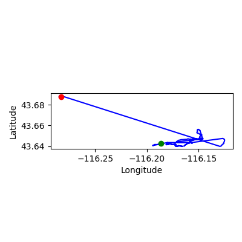
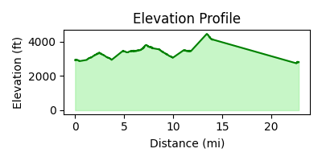
Day 5 - 2024-06-23
- Drive to next trailhead – 14.6 min
-
Part 2: Mountain Cove 2 Loop – 0.4 mi, 102 ft, 6 min
Park at Mountain Cove 2 Loop (43.62141, -116.18135)
- Start on Mountain Cove 2 (official trail) for 0.4 mi
- Drive to next trailhead – 10.0 min
-
Part 4: Mountain Cove 3 Loop – 0.3 mi, 59 ft, 5 min
Park at Mountain Cove 3 Loop (43.62444, -116.17599)
- Start on Mountain Cove 3 (official trail) for 0.3 mi
- Drive to next trailhead – 10.0 min
-
Part 6: Military Reserve Connection 1 Loop – 0.6 mi, 341 ft, 12 min
Park at Military Reserve Connection 1 Loop (43.62702, -116.17280)
- Start on Military Reserve Connection 1 (official trail) for 0.6 mi
- Drive to next trailhead – 16.3 min
-
Part 8: Central Ridge Spur 3 Loop – 0.2 mi, 49 ft, 3 min
Park at Central Ridge Spur 3 Loop (43.62160, -116.17921)
- Start on Central Ridge Spur 3 (official trail) for 0.2 mi
- Drive to next trailhead – 10.0 min
-
Part 10: Central Ridge Spur 2 Loop – 0.1 mi, 0 ft, 1 min
Park at Central Ridge Spur 2 Loop (43.62241, -116.17619)
- Start on Central Ridge Spur 2 (official trail) for 0.1 mi
- Drive to next trailhead – 10.0 min
-
Part 12: Central Ridge Trail 4 Loop – 0.1 mi, 7 ft, 2 min
Park at Central Ridge Trail 4 Loop (43.62218, -116.17481)
- Start on Central Ridge Trail 4 (official trail) for 0.1 mi
- Drive to next trailhead – 10.0 min
-
Part 14: Central Ridge Trail 3 Loop – 0.4 mi, 7 ft, 6 min
Park at Central Ridge Trail 3 Loop (43.62290, -116.17245)
- Start on Central Ridge Trail 3 (official trail) for 0.4 mi
- Drive to next trailhead – 11.4 min
-
Part 16: Access Trail CR 1 Loop – 0.2 mi, 33 ft, 3 min
Park at Access Trail CR 1 Loop (43.62444, -116.17599)
- Start on Access Trail CR 1 (official trail) for 0.2 mi
- Drive to next trailhead – 13.7 min
-
Part 18: Eagle Ridge Trail 3 Loop – 3.6 mi, 682 ft, 61 min
Park at Eagle Ridge Trail 3 Loop (43.61752, -116.17906)
- Start on Eagle Ridge Trail 3 (official trail) for 0.1 mi
- Turn straight onto Eagle Ridge Trail 2 (official trail) for 0.3 mi
- Turn left onto Connection (Eagle Ridge) 1 (out-and-back) (official trail) for 1.2 mi
- Turn left onto Eagle Ridge Trail 1 (official trail) for 0.2 mi
- Turn left onto Cottonwood Creek Trail 2 (official trail) for 0.3 mi
- Turn straight onto Cottonwood Creek Trail 3 (out-and-back) (official trail) for 0.7 mi
- Turn straight onto Cottonwood Creek Trail 2 (official trail) for 0.3 mi
- Turn left onto Cottonwood Creek Trail 1 (out-and-back) (official trail) for 0.2 mi
- Turn left onto Eagle Ridge Trail 1 (official trail) for 0.2 mi
- Turn right onto Eagle Ridge Trail 2 (official trail) for 0.3 mi
- Turn straight onto Eagle Ridge Trail 3 (official trail) for 0.1 mi
Warnings: Repeated segment 736; Repeated segment 743; Repeated segment 744; Repeated segment 745; Repeated segment 763; Repeated segment 764; Repeated segment 765
- Drive to next trailhead – 13.7 min
-
Part 20: Shoshone-Paiute 2 Loop – 0.3 mi, 253 ft, 6 min
Park at Shoshone-Paiute 2 Loop (43.60950, -116.17051)
- Start on Shoshone-Paiute 2 (official trail) for 0.3 mi
-
Part 21: Sheep Camp Trail 1 Loop – 0.8 mi, 102 ft, 13 min
Park at Sheep Camp Trail 1 Loop (43.69200, -116.16514)
- Start on Sheep Camp Trail 1 (official trail) for 0.8 mi
fits budget
Rationale: Includes drive transfers between trail groups.
- Total Distance: 6.8 mi
- New Distance: 5.0 mi
- Redundant Distance: 1.8 mi (27% )
- Redundant miles (post-optimization): 1.8 mi
- Total Elevation Gain: 1634 ft
- Redundant Elevation Gain: 341 ft (21% )
- Drive Time: 120 min
- Run Time: 117 min
- Total Time: 237 min
- Number of Activities: 11
- Number of Drives: 10
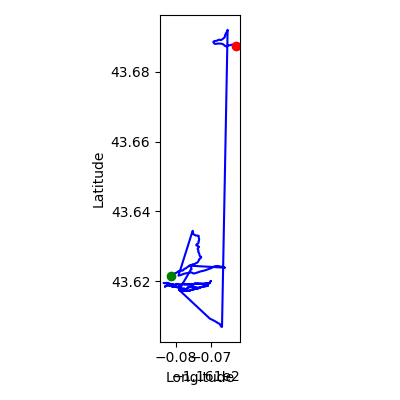
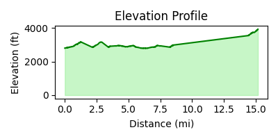
Day 6 - 2024-06-24
- Drive to next trailhead – 15.1 min
-
Part 2: Bob's Trail 1 Loop – 0.9 mi, 20 ft, 15 min
Park at Bob's Trail 1 Loop (43.65855, -116.17424)
- Start on Bob's Trail 1 (official trail) for 0.4 mi
- Turn left onto Bob's Trail 2 (out-and-back) (official trail) for 0.1 mi
- Turn right onto Bob's Trail 1 (official trail) for 0.4 mi
Warnings: Repeated segment 717; Repeated segment 718
- Drive to next trailhead – 11.7 min
-
Part 4: Highlands Trail 2 Loop – 0.6 mi, 144 ft, 11 min
Park at Highlands Trail 2 Loop (43.65859, -116.17419)
- Start on Highlands Trail 2 (official trail) for 0.6 mi
- Drive to next trailhead – 17.2 min
-
Part 6: Connector 1 Loop – 3.3 mi, 906 ft, 58 min
Park at Connector 1 Loop (43.67327, -116.17989)
- Start on Connector 1 (official trail) for 0.7 mi
- Turn left onto Corrals Trail 4 (out-and-back) (official trail) for 1.2 mi
- Turn left onto Corrals Trail 5 (out-and-back) (official trail) for 0.8 mi
- Turn left onto Connector 1 (official trail) for 0.7 mi
Warnings: Repeated segment 737; Repeated segment 741; Repeated segment 742
- Drive to next trailhead – 14.3 min
-
Part 8: Dry Creek Trail 2 Loop – 3.5 mi, 2001 ft, 65 min
Park at Dry Creek Trail 2 Loop (43.68876, -116.17755)
- Start on Dry Creek Trail 2 (official trail) for 0.7 mi
- Turn left onto Dry Creek Trail 3 (out-and-back) (official trail) for 2.0 mi
- Turn right onto Dry Creek Trail 2 (official trail) for 0.7 mi
Warnings: Repeated segment 758; Repeated segment 759
- Drive to next trailhead – 29.9 min
-
Part 10: Shindig 2 Loop – 0.1 mi, 56 ft, 2 min
Park at Shindig 2 Loop (43.76162, -116.08839)
- Start on Shindig 2 (official trail) for 0.1 mi
-
Part 11: Seaman Gulch Trail 5 Loop – 2.5 mi, 807 ft, 43 min
Park at Seaman Gulch Trail 5 Loop (43.69311, -116.27927)
- Start on Seaman Gulch Trail 5 (official trail) for 0.5 mi
- Turn straight at Junction (Seaman Gulch Trail 5 × Seaman Gulch Trail 4) onto Seaman Gulch Trail 4 (official trail) for 0.5 mi
- Turn straight at Junction (Seaman Gulch Trail 4 × Seaman Gulch Trail 3) onto Seaman Gulch Trail 3 (out-and-back) (official trail) for 0.3 mi
- Turn straight onto Seaman Gulch Trail 4 (official trail) for 0.5 mi
- Turn straight onto Seaman Gulch Trail 5 (official trail) for 0.5 mi
Warnings: Repeated segment 861; Repeated segment 862; Repeated segment 863
over budget by 42.3 min; big effort after easier day; big effort after easier day; big effort after easier day; big effort after easier day; big effort after easier day; big effort after easier day; big effort after easier day; big effort after easier day; big effort after easier day; big effort after easier day; big effort after easier day; big effort after easier day; big effort after easier day; big effort after easier day; big effort after easier day; big effort after easier day; big effort after easier day; big effort after easier day; big effort after easier day; big effort after easier day; big effort after easier day
Rationale: Includes drive transfers between trail groups. Longer effort scheduled after an easier day.
- Total Distance: 10.9 mi
- New Distance: 5.8 mi
- Redundant Distance: 5.1 mi (47% )
- Redundant miles (post-optimization): 5.1 mi
- Total Elevation Gain: 3934 ft
- Redundant Elevation Gain: 1867 ft (48% )
- Drive Time: 88 min
- Run Time: 194 min
- Total Time: 282 min
- Number of Activities: 6
- Number of Drives: 5
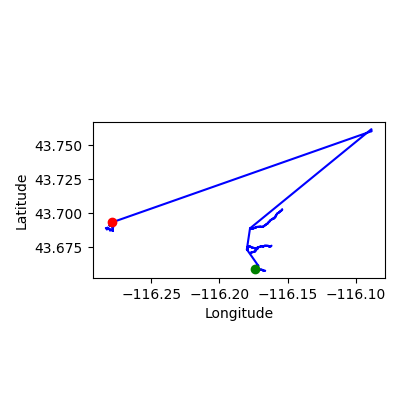
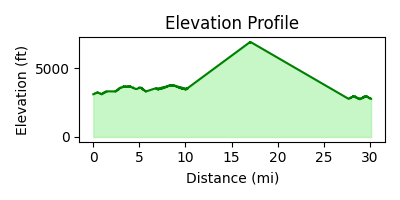
Day 7 - 2024-06-25
- Drive to next trailhead – 15.3 min
-
Part 2: 36th Street Chute 1 Loop – 7.8 mi, 1844 ft, 127 min
Park at 36th Street Chute 1 Loop (43.66189, -116.22660)
- Start on 36th Street Chute 1 (official trail) for 0.7 mi
- Turn right onto CHBH Connector 1 (official trail) for 0.8 mi
- Turn right onto Polecat Loop 5 (ascent) (official trail) for 1.4 mi – keep uphill
- Turn right onto foot_connector (road) for 0.0 mi
- Turn right onto North Cartwright Road (road) for 0.0 mi
- Turn right onto North Cartwright Road (road) for 0.2 mi
- Turn right onto road_121996 (road) for 0.0 mi
- Turn left onto road_121995 (road) for 0.0 mi
- Turn left onto road_121994 (road) for 0.0 mi
- Turn right onto road_121991 (road) for 0.0 mi
- Turn left onto road_121986 (road) for 0.0 mi
- Turn right onto road_121983 (road) for 0.0 mi
- Turn left onto road_121975 (road) for 0.1 mi
- Turn right onto road_121972 (road) for 0.0 mi
- Turn right onto road_121971 (road) for 0.1 mi
- Turn right onto road_121968 (road) for 0.0 mi
- Turn right onto West Bison Drive (road) for 0.0 mi
- Turn left onto North 36th Street (road) for 0.0 mi
- Turn left onto road_182513 (road) for 0.1 mi
- Turn right onto North 36th Street (road) for 0.0 mi
- Turn right onto foot_connector (road) for 0.0 mi
- Turn left onto 36th Street Chute 1 (official trail) for 0.7 mi
- Turn right onto CHBH Connector 1 (out-and-back) (official trail) for 1.6 mi
- Turn left at Junction (CHBH Connector 1 × 36th Street Chute 1) onto 36th Street Chute 1 (official trail) for 0.7 mi
Warnings: Repeated segment 700; Repeated segment 730
- Drive to next trailhead – 15.7 min
-
Part 4: Polecat Loop 4 Loop – 0.5 mi, 190 ft, 9 min
Park at Polecat Loop 4 Loop (43.67741, -116.22974)
- Start on Polecat Loop 4 (official trail) for 0.5 mi
- Drive to next trailhead – 16.5 min
-
Part 6: Currant Creek 2 Loop – 1.5 mi, 551 ft, 27 min
Park at Currant Creek 2 Loop (43.72732, -116.23351)
- Start on Currant Creek 2 (official trail) for 0.4 mi
- Turn right onto Red Tail Trail 4 (out-and-back) (official trail) for 0.4 mi
- Turn left onto Red Tail Trail 3 (out-and-back) (official trail) for 0.3 mi
- Turn left onto Currant Creek 2 (official trail) for 0.4 mi
Warnings: Repeated segment 751; Repeated segment 838; Repeated segment 839
- Drive to next trailhead – 10.3 min
-
Part 8: Red Tail Trail 2 Loop – 0.8 mi, 23 ft, 12 min
Park at Red Tail Trail 2 Loop (43.72850, -116.24029)
- Start on Red Tail Trail 2 (official trail) for 0.8 mi
-
Part 9: Seaman Gulch Trail 5 Loop – 2.4 mi, 1168 ft, 44 min
Park at Seaman Gulch Trail 5 Loop (43.69311, -116.27927)
- Start on Seaman Gulch Trail 5 (out-and-back) (official trail) for 1.1 mi
- Turn left onto Seaman Gulch Trail 1 (official trail) for 0.5 mi
- Turn straight onto Seaman Gulch Trail 3 (out-and-back) (official trail) for 0.3 mi
- Turn straight onto Seaman Gulch Trail 1 (official trail) for 0.5 mi
Warnings: Repeated segment 859; Repeated segment 861; Repeated segment 863
over budget by 39.5 min
Rationale: Includes drive transfers between trail groups.
- Total Distance: 13.0 mi
- New Distance: 6.2 mi
- Redundant Distance: 6.8 mi (52% )
- Redundant miles (post-optimization): 6.8 mi
- Total Elevation Gain: 3776 ft
- Redundant Elevation Gain: 1581 ft (42% )
- Drive Time: 58 min
- Run Time: 222 min
- Total Time: 280 min
- Number of Activities: 5
- Number of Drives: 4
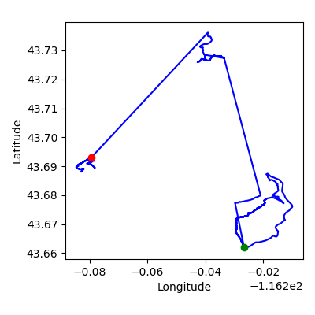
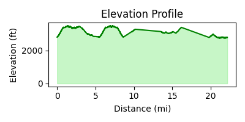
Day 8 - 2024-06-26
- Drive to next trailhead – 18.3 min
-
Part 2: Rock Island 1 Loop – 3.6 mi, 984 ft, 63 min
Park at Rock Island 1 Loop (43.59203, -116.16365)
- Start on Rock Island 1 (official trail) for 0.3 mi
- Turn left onto Rock Garden 1 (official trail) for 0.6 mi
- Turn left onto Rock Island 4 (official trail) for 0.2 mi
- Turn left onto Rock Island 8 (official trail) for 0.3 mi
- Turn straight onto Rock Island 3 (official trail) for 0.4 mi
- Turn left onto Rock Island 5 (official trail) for 0.5 mi
- Turn straight at Junction (Rock Island 5 × Rock Island 6) onto Rock Island 6 (official trail) for 0.2 mi
- Turn left at Junction (Rock Island 6 × Rock Island 7) onto Rock Island 7 (official trail) for 0.1 mi
- Turn straight at Junction (Rock Island 7 × Rock Garden 3) onto Rock Garden 3 (official trail) for 0.1 mi
- Turn right onto Rock Island 7 (official trail) for 0.1 mi
- Turn straight onto Rock Island 2 (official trail) for 0.1 mi
- Turn straight at Junction (Rock Island 2 × Rock Garden 2) onto Rock Garden 2 (official trail) for 0.0 mi
- Turn straight at Junction (Rock Garden 2 × Rock Island 1) onto Rock Island 1 (official trail) for 0.3 mi
- Turn right onto Tram Trail 1 (official trail) for 0.5 mi
Warnings: Repeated segment 849; Repeated segment 856
- Drive to next trailhead – 11.3 min
-
Part 4: Tram Trail 1 Loop – 0.5 mi, 443 ft, 10 min
Park at Tram Trail 1 Loop (43.59203, -116.16365)
- Start on Tram Trail 1 (official trail) for 0.5 mi
- Drive to next trailhead – 19.7 min
-
Part 6: Three Bears Trail 4 Loop – 1.9 mi, 807 ft, 34 min
Park at Three Bears Trail 4 Loop (43.62804, -116.14411)
- Start on Three Bears Trail 4 (official trail) for 1.9 mi
- Drive to next trailhead – 12.6 min
-
Part 8: Shane's Connector 1 Loop – 3.6 mi, 1568 ft, 66 min
Park at Shane's Connector 1 Loop (43.62342, -116.13690)
- Start on Shane's Connector 1 (official trail) for 0.4 mi
- Turn straight onto Shane's Trail 3 (official trail) for 0.4 mi
- Turn left onto Three Bears Trail 3 (official trail) for 0.5 mi
- Turn left onto Shane's Trail 1 (out-and-back) (official trail) for 0.9 mi
- Turn right onto Three Bears Trail 3 (official trail) for 0.5 mi
- Turn right onto Shane's Trail 3 (official trail) for 0.4 mi
- Turn straight onto Shane's Connector 1 (official trail) for 0.4 mi
Warnings: Repeated segment 864; Repeated segment 866; Repeated segment 867; Repeated segment 899
-
Part 9: Rabbit Run 1 Loop – 5.6 mi, 1109 ft, 95 min
Park at Rabbit Run 1 Loop (43.71352, -116.31458)
- Start on Rabbit Run 1 (official trail) for 0.2 mi
- Turn right at Junction (Rabbit Run 1 × Rabbit Run 2) onto Rabbit Run 2 (official trail) for 0.1 mi
- Turn right onto D's Chaos 1 (out-and-back) (official trail) for 2.2 mi
- Turn right onto Rabbit Run 3 (official trail) for 0.6 mi
- Turn left at Junction (Rabbit Run 3 × Rabbit Run 4) onto Rabbit Run 4 (out-and-back) (official trail) for 1.7 mi
- Turn right onto Rabbit Run 3 (official trail) for 0.6 mi
- Turn straight onto Rabbit Run 2 (official trail) for 0.1 mi
- Turn left onto Rabbit Run 1 (official trail) for 0.2 mi
Warnings: Repeated segment 753; Repeated segment 830; Repeated segment 831; Repeated segment 832; Repeated segment 833
over budget by 89.6 min
Rationale: Includes drive transfers between trail groups.
- Total Distance: 15.2 mi
- New Distance: 9.7 mi
- Redundant Distance: 5.5 mi (36% )
- Redundant miles (post-optimization): 5.5 mi
- Total Elevation Gain: 4911 ft
- Redundant Elevation Gain: 1890 ft (38% )
- Drive Time: 62 min
- Run Time: 268 min
- Total Time: 330 min
- Number of Activities: 5
- Number of Drives: 4
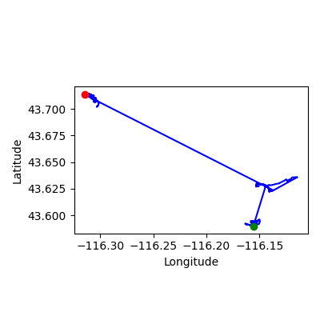
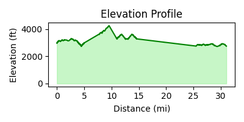
Day 9 - 2024-06-27
- Drive to next trailhead – 18.6 min
-
Part 2: Peggy's Trail 1 Loop – 4.6 mi, 1578 ft, 81 min
Park at Peggy's Trail 1 Loop (43.68804, -116.21832)
- Start on Peggy's Trail 1 (official trail) for 4.6 mi
-
Part 3: Sweet Connie Trail 2 Loop – 7.3 mi, 2625 ft, 130 min
Park at Sweet Connie Trail 2 Loop (43.71954, -116.22946)
- Start on Sweet Connie Trail 2 (ascent) (official trail) for 0.7 mi
- Turn straight onto None (connector trail) for 3.3 mi
- Turn straight onto Chukar Butte Trail 1 (official trail) for 3.3 mi
-
Part 4: D's Chaos 1 Loop – 3.2 mi, 617 ft, 54 min
Park at D's Chaos 1 Loop (43.71396, -116.31129)
- Start on D's Chaos 1 (official trail) for 1.1 mi
- Turn right onto REI Connection 1 (out-and-back) (official trail) for 1.0 mi
- Turn left onto D's Chaos 1 (official trail) for 1.1 mi
Warnings: Repeated segment 753; Repeated segment 844
over budget by 43.3 min
Rationale: Includes drive transfers between trail groups.
- Total Distance: 15.0 mi
- New Distance: 10.2 mi
- Redundant Distance: 4.9 mi (32% )
- Redundant miles (post-optimization): 4.9 mi
- Total Elevation Gain: 4820 ft
- Redundant Elevation Gain: 1273 ft (26% )
- Drive Time: 19 min
- Run Time: 265 min
- Total Time: 283 min
- Number of Activities: 3
- Number of Drives: 1
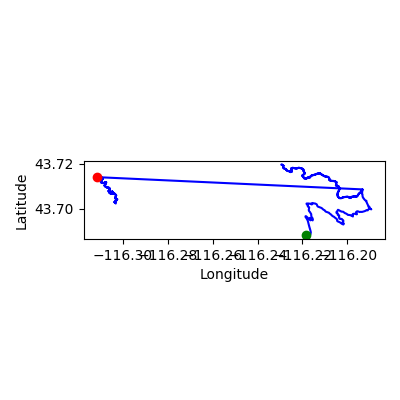
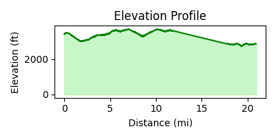
Day 10 - 2024-06-28
- Drive to next trailhead – 18.7 min
-
Part 2: Polecat Loop 2 Loop – 6.5 mi, 2493 ft, 116 min
Park at Polecat Loop 2 Loop (43.68870, -116.21989)
- Start on Polecat Loop 2 (ascent) (official trail) for 2.0 mi
- Turn right at Junction (Polecat Loop 2 × Polecat Loop 3) onto Polecat Loop 3 (ascent) (out-and-back) (official trail) for 2.4 mi – keep uphill
- Turn left onto Polecat Loop 2 (ascent) (official trail) for 2.0 mi – keep uphill
Warnings: Repeated segment 922; Repeated segment 924
- Drive to next trailhead – 14.9 min
-
Part 4: Barn Owl 1 Loop – 4.4 mi, 1109 ft, 76 min
Park at Barn Owl 1 Loop (43.71496, -116.24239)
- Start on Barn Owl 1 (official trail) for 0.6 mi
- Turn left onto Barn Owl 2 (official trail) for 0.8 mi
- Turn straight onto Cartwright Ridge 1 (out-and-back) (official trail) for 1.5 mi
- Turn straight onto Barn Owl 2 (official trail) for 0.8 mi
- Turn right onto Barn Owl 1 (official trail) for 0.6 mi
Warnings: Repeated segment 712; Repeated segment 713; Repeated segment 725
-
Part 5: Stack Rock Connector 1 Loop – 2.5 mi, 1099 ft, 45 min
Park at Stack Rock Connector 1 Loop (43.73394, -116.12798)
- Start on Stack Rock Connector 1 (official trail) for 2.5 mi
over budget by 30.7 min
Rationale: Includes drive transfers between trail groups.
- Total Distance: 13.3 mi
- New Distance: 7.9 mi
- Redundant Distance: 5.4 mi (41% )
- Redundant miles (post-optimization): 5.4 mi
- Total Elevation Gain: 4701 ft
- Redundant Elevation Gain: 1801 ft (38% )
- Drive Time: 34 min
- Run Time: 237 min
- Total Time: 271 min
- Number of Activities: 3
- Number of Drives: 2
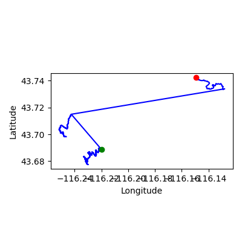
Day 11 - 2024-06-29
- Drive to next trailhead – 20.3 min
-
Part 2: Shane's Trail 2 Loop – 1.0 mi, 148 ft, 16 min
Park at Shane's Trail 2 Loop (43.62458, -116.14133)
- Start on Shane's Trail 2 (official trail) for 1.0 mi
- Drive to next trailhead – 17.2 min
-
Part 4: Table Rock Quarry Trail 3 Loop – 4.2 mi, 2126 ft, 77 min
Park at Table Rock Quarry Trail 3 Loop (43.59654, -116.14365)
- Start on Table Rock Quarry Trail 3 (official trail) for 0.3 mi
- Turn straight onto Table Rock Quarry Trail 2 (official trail) for 0.2 mi
- Turn right at Junction (Table Rock Quarry Trail 2 × Table Rock Quarry Trail 1) onto Table Rock Quarry Trail 1 (official trail) for 0.6 mi
- Turn right at Junction (Table Rock Quarry Trail 1 × Table Rock Trail 7) onto Table Rock Trail 7 (out-and-back) (official trail) for 0.6 mi
- Turn straight onto Table Rock Trail 6 (official trail) for 0.1 mi
- Turn right onto Table Rock Trail 5 (official trail) for 0.3 mi
- Turn straight onto Table Rock Trail 4 (out-and-back) (official trail) for 0.7 mi
- Turn straight onto Table Rock Trail 5 (official trail) for 0.3 mi
- Turn left onto Table Rock Trail 6 (official trail) for 0.1 mi
- Turn right onto Table Rock Quarry Trail 1 (official trail) for 0.6 mi
- Turn left onto Table Rock Quarry Trail 2 (official trail) for 0.2 mi
- Turn straight onto Table Rock Quarry Trail 3 (official trail) for 0.3 mi
Warnings: Repeated segment 1193; Repeated segment 885; Repeated segment 886; Repeated segment 890; Repeated segment 891; Repeated segment 892; Repeated segment 893
- Drive to next trailhead – 34.8 min
-
Part 6: Veterans 1 Loop – 0.7 mi, 285 ft, 13 min
Park at Veterans 1 Loop (43.69182, -116.30215)
- Start on Veterans 1 (official trail) for 0.7 mi
- Drive to next trailhead – 10.0 min
-
Part 8: Veterans 2 Loop – 0.0 mi, 13 ft, 1 min
Park at Veterans 2 Loop (43.70019, -116.29929)
- Start on Veterans 2 (official trail) for 0.0 mi
-
Part 9: Veterans 3 Loop – 0.7 mi, 213 ft, 12 min
Park at Veterans 3 Loop (43.70175, -116.30352)
- Start on Veterans 3 (official trail) for 0.2 mi
- Turn left at Junction (Veterans 3 × Big Springs 1) onto Big Springs 1 (official trail) for 0.4 mi
- Drive to next trailhead – 13.5 min
-
Part 11: Veterans 3 Loop – 0.2 mi, 0 ft, 4 min
Park at Veterans 3 Loop (43.70175, -116.30352)
- Start on Veterans 3 (official trail) for 0.2 mi
-
Part 12: Stack Rock Connector 2 Loop – 1.0 mi, 564 ft, 19 min
Park at Stack Rock Connector 2 Loop (43.73417, -116.12744)
- Start on Stack Rock Connector 2 (official trail) for 1.0 mi
fits budget; easier day to recover after yesterday’s long run; easier day to recover after yesterday’s long run; easier day to recover after yesterday’s long run; easier day to recover after yesterday’s long run; easier day to recover after yesterday’s long run; easier day to recover after yesterday’s long run; easier day to recover after yesterday’s long run; easier day to recover after yesterday’s long run; easier day to recover after yesterday’s long run; easier day to recover after yesterday’s long run; easier day to recover after yesterday’s long run; easier day to recover after yesterday’s long run; easier day to recover after yesterday’s long run; easier day to recover after yesterday’s long run; easier day to recover after yesterday’s long run; easier day to recover after yesterday’s long run
Rationale: Includes drive transfers between trail groups. Shorter day planned for recovery.
- Total Distance: 7.8 mi
- New Distance: 5.5 mi
- Redundant Distance: 2.3 mi (30% )
- Redundant miles (post-optimization): 2.3 mi
- Total Elevation Gain: 3350 ft
- Redundant Elevation Gain: 1063 ft (32% )
- Drive Time: 96 min
- Run Time: 142 min
- Total Time: 238 min
- Number of Activities: 7
- Number of Drives: 5
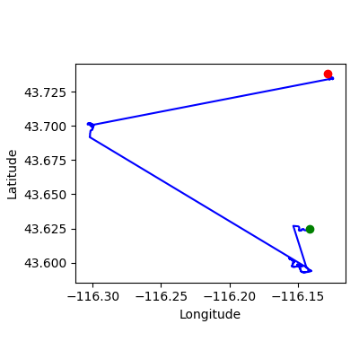
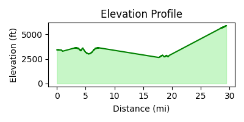
Day 12 - 2024-06-30
- Drive to next trailhead – 21.6 min
-
Part 2: Freestone Ridge 1 Loop – 5.0 mi, 2080 ft, 91 min
Park at Freestone Ridge 1 Loop (43.64107, -116.13596)
- Start on Freestone Ridge 1 (official trail) for 1.7 mi
- Turn left onto Three Bears Trail 2 (out-and-back) (official trail) for 1.7 mi
- Turn right onto Freestone Ridge 1 (official trail) for 1.7 mi
Warnings: Repeated segment 786; Repeated segment 898
- Drive to next trailhead – 29.1 min
-
Part 4: Cartwright Connector 1 Loop – 5.4 mi, 1129 ft, 92 min
Park at Cartwright Connector 1 Loop (43.70875, -116.23277)
- Start on Cartwright Connector 1 (official trail) for 1.7 mi
- Turn right onto Cartwright Ridge 2 (out-and-back) (official trail) for 2.0 mi
- Turn left onto Cartwright Connector 1 (official trail) for 1.7 mi
Warnings: Repeated segment 726; Repeated segment 934
-
Part 5: Dry Creek Trail 6 Loop – 4.1 mi, 774 ft, 69 min
Park at Dry Creek Trail 6 Loop (43.71666, -116.09672)
- Start on Dry Creek Trail 6 (official trail) for 0.4 mi
- Turn right at Junction (Dry Creek Trail 6 × Dry Creek Trail 5) onto Dry Creek Trail 5 (out-and-back) (official trail) for 3.3 mi
- Turn left onto Dry Creek Trail 6 (official trail) for 0.4 mi
Warnings: Repeated segment 761; Repeated segment 762
over budget by 62.4 min; big effort after easier day; big effort after easier day; big effort after easier day; big effort after easier day; big effort after easier day; big effort after easier day; big effort after easier day; big effort after easier day; big effort after easier day; big effort after easier day; big effort after easier day; big effort after easier day; big effort after easier day; big effort after easier day; big effort after easier day
Rationale: Includes drive transfers between trail groups. Longer effort scheduled after an easier day.
- Total Distance: 14.5 mi
- New Distance: 7.2 mi
- Redundant Distance: 7.2 mi (50% )
- Redundant miles (post-optimization): 7.2 mi
- Total Elevation Gain: 3983 ft
- Redundant Elevation Gain: 1991 ft (50% )
- Drive Time: 51 min
- Run Time: 252 min
- Total Time: 302 min
- Number of Activities: 3
- Number of Drives: 2
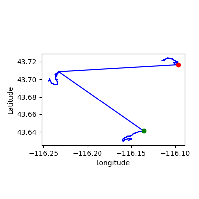
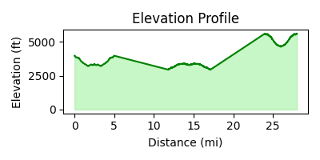
Day 13 - 2024-07-01
- Drive to next trailhead – 23.8 min
-
Part 2: Scott's Trail 1 Loop – 8.0 mi, 1168 ft, 133 min
Park at Scott's Trail 1 Loop (43.67094, -116.12125)
- Start on Scott's Trail 1 (official trail) for 1.1 mi
- Turn left at Junction (Scott's Trail 1 × Corrals Trail 2) onto Corrals Trail 2 (official trail) for 1.8 mi
- Turn right at Junction (Corrals Trail 2 × Bob's Trail 3) onto Bob's Trail 3 (out-and-back) (official trail) for 2.3 mi
- Turn left onto Corrals Trail 2 (official trail) for 1.8 mi
- Turn right onto Scott's Trail 1 (official trail) for 1.1 mi
Warnings: Repeated segment 719; Repeated segment 739; Repeated segment 858
- Drive to next trailhead – 29.5 min
-
Part 4: Around the Mountain Trail 1 Loop – 0.8 mi, 387 ft, 14 min
Park at Around the Mountain Trail 1 Loop (43.75019, -116.10238)
- Start on Around the Mountain Trail 1 (ascent) (official trail) for 0.8 mi
- Drive to next trailhead – 16.3 min
-
Part 6: Deer Point Trail 1 Loop – 1.1 mi, 600 ft, 21 min
Park at Deer Point Trail 1 Loop (43.75644, -116.10413)
- Start on Deer Point Trail 1 (official trail) for 1.1 mi
-
Part 7: Shingle Creek Trail 1 Loop – 4.8 mi, 3337 ft, 93 min
Park at Shingle Creek Trail 1 Loop (43.71898, -116.10176)
- Start on Shingle Creek Trail 1 (ascent) (official trail) for 4.8 mi
over budget by 90.9 min
Rationale: Includes drive transfers between trail groups.
- Total Distance: 14.6 mi
- New Distance: 10.6 mi
- Redundant Distance: 4.0 mi (27% )
- Redundant miles (post-optimization): 4.0 mi
- Total Elevation Gain: 5492 ft
- Redundant Elevation Gain: 584 ft (11% )
- Drive Time: 70 min
- Run Time: 261 min
- Total Time: 331 min
- Number of Activities: 4
- Number of Drives: 3
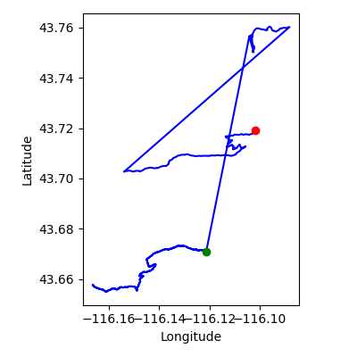
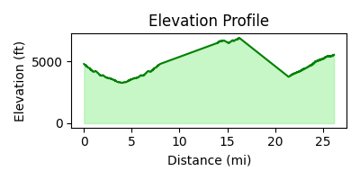
Day 14 - 2024-07-02
- Drive to next trailhead – 24.0 min
-
Part 2: Chukar Butte Trail 2 Loop – 8.0 mi, 3373 ft, 144 min
Park at Chukar Butte Trail 2 Loop (43.72106, -116.23419)
- Start on Chukar Butte Trail 2 (official trail) for 0.7 mi
- Turn left at Junction (Chukar Butte Trail 2 × Chukar Butte Trail 1) onto Chukar Butte Trail 1 (out-and-back) (official trail) for 6.6 mi
- Turn right onto Chukar Butte Trail 2 (official trail) for 0.7 mi
Warnings: Repeated segment 733; Repeated segment 734
- Drive to next trailhead – 10.9 min
-
Part 4: Currant Creek 3 Loop – 1.0 mi, 302 ft, 17 min
Park at Currant Creek 3 Loop (43.72732, -116.23351)
- Start on Currant Creek 3 (official trail) for 1.0 mi
- Drive to next trailhead – 11.5 min
-
Part 6: Currant Creek 1 Loop – 0.4 mi, 184 ft, 8 min
Park at Currant Creek 1 Loop (43.72850, -116.24029)
- Start on Currant Creek 1 (official trail) for 0.4 mi
-
Part 7: Hard Guy Trail 2 Loop – 3.7 mi, 1903 ft, 69 min
Park at Hard Guy Trail 2 Loop (43.70334, -116.10535)
- Start on Hard Guy Trail 2 (ascent) (official trail) for 3.7 mi
over budget by 44.8 min
Rationale: Includes drive transfers between trail groups.
- Total Distance: 13.1 mi
- New Distance: 9.1 mi
- Redundant Distance: 4.0 mi (30% )
- Redundant miles (post-optimization): 4.0 mi
- Total Elevation Gain: 5761 ft
- Redundant Elevation Gain: 1686 ft (29% )
- Drive Time: 46 min
- Run Time: 238 min
- Total Time: 285 min
- Number of Activities: 4
- Number of Drives: 3
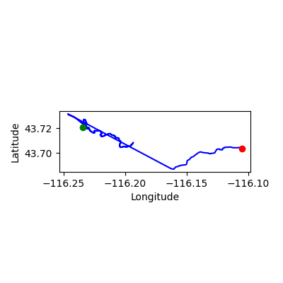
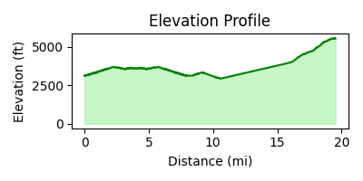
Day 15 - 2024-07-03
- Drive to next trailhead – 24.0 min
-
Part 2: Three Bears Trail 5 Loop – 7.0 mi, 2172 ft, 122 min
Park at Three Bears Trail 5 Loop (43.62996, -116.10860)
- Start on Three Bears Trail 5 (official trail) for 0.9 mi
- Turn left onto Three Bears Trail 4 (out-and-back) (official trail) for 3.7 mi
- Turn left onto Watchman Trail 2 (out-and-back) (official trail) for 1.5 mi
- Turn left onto Three Bears Trail 5 (official trail) for 0.9 mi
Warnings: Repeated segment 900; Repeated segment 901; Repeated segment 911
- Drive to next trailhead – 38.2 min
-
Part 4: Red Tail Trail 8 Loop – 1.3 mi, 472 ft, 23 min
Park at Red Tail Trail 8 Loop (43.72527, -116.24704)
- Start on Red Tail Trail 8 (official trail) for 0.1 mi
- Turn straight onto Red Tail Trail 7 (official trail) for 0.3 mi
- Turn right onto Red Tail Trail 6 (official trail) for 0.0 mi
- Turn straight onto Red Tail Trail 5 (out-and-back) (official trail) for 0.6 mi
- Turn straight onto Red Tail Trail 6 (official trail) for 0.0 mi
- Turn left onto Red Tail Trail 7 (official trail) for 0.3 mi
- Turn straight onto Red Tail Trail 8 (official trail) for 0.1 mi
Warnings: Repeated segment 840; Repeated segment 841; Repeated segment 842; Repeated segment 843
- Drive to next trailhead – 14.8 min
-
Part 6: Red Tail Trail 1 Loop – 1.0 mi, 171 ft, 17 min
Park at Red Tail Trail 1 Loop (43.73962, -116.22608)
- Start on Red Tail Trail 1 (official trail) for 1.0 mi
-
Part 7: Shingle Creek Trail 1 Loop – 15.6 mi, 7822 ft, 288 min
Park at Shingle Creek Trail 1 Loop (43.71898, -116.10176)
- Start on Shingle Creek Trail 1 (ascent) (official trail) for 4.8 mi
- Turn right onto Dry Creek Trail 4 (out-and-back) (official trail) for 6.0 mi
- Turn left at Junction (Dry Creek Trail 4 × Shingle Creek Trail 1) onto Shingle Creek Trail 1 (ascent) (official trail) for 4.8 mi – keep uphill
Warnings: Repeated segment 760; Repeated segment 871
over budget by 287.7 min; big effort after easier day; big effort after easier day; big effort after easier day; big effort after easier day; big effort after easier day; big effort after easier day; big effort after easier day; big effort after easier day; big effort after easier day; big effort after easier day; big effort after easier day; big effort after easier day
Rationale: Includes drive transfers between trail groups. Longer effort scheduled after an easier day.
- Total Distance: 24.8 mi
- New Distance: 12.9 mi
- Redundant Distance: 11.9 mi (48% )
- Redundant miles (post-optimization): 11.9 mi
- Total Elevation Gain: 10636 ft
- Redundant Elevation Gain: 5233 ft (49% )
- Drive Time: 77 min
- Run Time: 451 min
- Total Time: 528 min
- Number of Activities: 4
- Number of Drives: 3
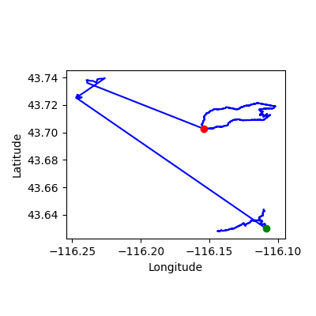
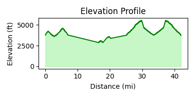
Day 16 - 2024-07-04
- Drive to next trailhead – 25.3 min
-
Part 2: Bitterbrush Trail 1 Loop – 3.0 mi, 1175 ft, 54 min
Park at Bitterbrush Trail 1 Loop (43.72584, -116.24264)
- Start on Bitterbrush Trail 1 (official trail) for 0.7 mi
- Turn straight onto Chukar Butte Trail 3 (out-and-back) (official trail) for 1.7 mi
- Turn straight onto Bitterbrush Trail 1 (official trail) for 0.7 mi
Warnings: Repeated segment 716; Repeated segment 735
-
Part 3: Red Tail Trail 4 Loop – 5.7 mi, 3031 ft, 107 min
Park at Red Tail Trail 4 Loop (43.72850, -116.24029)
- Start on foot_connector (road) for 0.0 mi
- Turn right onto Red Tail Trail 4 (official trail) for 0.2 mi
- Turn left onto Red Tail Trail 3 (official trail) for 0.1 mi
- Turn left onto Currant Creek 1 (official trail) for 0.4 mi
- Turn straight onto Landslide 1 (out-and-back) (official trail) for 4.5 mi
- Turn straight onto Currant Creek 1 (official trail) for 0.4 mi
Warnings: Repeated segment 750; Repeated segment 807
-
Part 4: Landslide 1 Loop – 2.3 mi, 1286 ft, 42 min
Park at Landslide 1 Loop (43.73168, -116.24636)
- Start on Landslide 1 (official trail) for 2.3 mi
fits budget; easier day to recover after yesterday’s long run; easier day to recover after yesterday’s long run; easier day to recover after yesterday’s long run; easier day to recover after yesterday’s long run; easier day to recover after yesterday’s long run; easier day to recover after yesterday’s long run; easier day to recover after yesterday’s long run; easier day to recover after yesterday’s long run; easier day to recover after yesterday’s long run; easier day to recover after yesterday’s long run; easier day to recover after yesterday’s long run
Rationale: Includes drive transfers between trail groups. Shorter day planned for recovery.
- Total Distance: 11.0 mi
- New Distance: 4.5 mi
- Redundant Distance: 6.5 mi (59% )
- Redundant miles (post-optimization): 6.5 mi
- Total Elevation Gain: 5492 ft
- Redundant Elevation Gain: 3343 ft (61% )
- Drive Time: 25 min
- Run Time: 203 min
- Total Time: 229 min
- Number of Activities: 3
- Number of Drives: 1
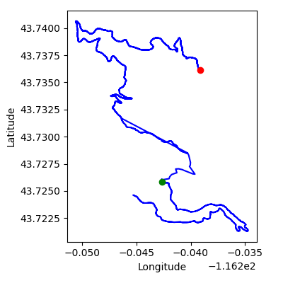
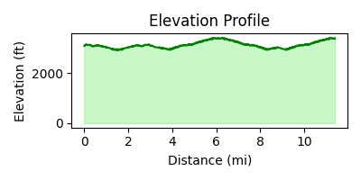
Day 17 - 2024-07-05
- Drive to next trailhead – 26.8 min
-
Part 2: Hawkins 1 Loop – 11.3 mi, 5072 ft, 206 min
Park at Hawkins 1 Loop (43.70532, -116.16973)
- Start on Hawkins 1 (ascent) (official trail) for 0.5 mi
- Turn straight at Junction (Hawkins 1 × Hawkins 2) onto Hawkins 2 (ascent) (official trail) for 4.4 mi – keep uphill
- Turn straight at Junction (Hawkins 2 × Hawkins 3) onto Hawkins 3 (ascent) (out-and-back) (official trail) for 1.4 mi – keep uphill
- Turn straight onto Hawkins 2 (ascent) (official trail) for 4.4 mi – keep uphill
- Turn straight onto Hawkins 1 (ascent) (official trail) for 0.5 mi – keep uphill
Warnings: Repeated segment 794; Repeated segment 795; Repeated segment 796
fits budget
Rationale: Includes drive transfers between trail groups.
- Total Distance: 11.3 mi
- New Distance: 5.6 mi
- Redundant Distance: 5.6 mi (50% )
- Redundant miles (post-optimization): 5.6 mi
- Total Elevation Gain: 5072 ft
- Redundant Elevation Gain: 2536 ft (50% )
- Drive Time: 27 min
- Run Time: 206 min
- Total Time: 232 min
- Number of Activities: 1
- Number of Drives: 1
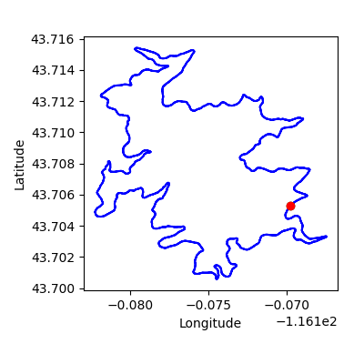

Day 18 - 2024-07-06
- Drive to next trailhead – 35.1 min
-
Part 2: Twisted Spring 1 Loop – 1.5 mi, 289 ft, 25 min
Park at Twisted Spring 1 Loop (43.77680, -116.26143)
- Start on Twisted Spring 1 (official trail) for 0.4 mi
- Turn right onto Twisted Spring 2 (official trail) for 0.3 mi
- Turn left onto Twisted Spring 3 (out-and-back) (official trail) for 0.1 mi
- Turn right onto Twisted Spring 2 (official trail) for 0.3 mi
- Turn left onto Twisted Spring 1 (official trail) for 0.4 mi
Warnings: Repeated segment 903; Repeated segment 904; Repeated segment 905
-
Part 3: Twisted Spring 2 Loop – 5.3 mi, 1010 ft, 91 min
Park at Twisted Spring 2 Loop (43.77311, -116.24795)
- Start on Twisted Spring 2 (official trail) for 0.3 mi
- Turn left onto Twisted Spring 3 (official trail) for 0.1 mi
- Turn right onto Spring Creek 1 (official trail) for 0.1 mi
- Turn right onto Harlow's Hollows 1 (official trail) for 0.3 mi
- Turn right onto Harlow's Hollows Connector 1 (official trail) for 0.9 mi
- Turn straight onto Harlow's Hollows 2 (official trail) for 0.4 mi
- Turn straight onto Harlow's Hollows 3 (official trail) for 0.5 mi
- Turn left onto Harlow's Hollows 4 (out-and-back) (official trail) for 0.4 mi
- Turn right onto Harlow's Hollows 3 (official trail) for 0.5 mi
- Turn straight onto Harlow's Hollows 2 (official trail) for 0.4 mi
- Turn straight onto Harlow's Hollows Connector 1 (official trail) for 0.9 mi
- Turn left onto Harlow's Hollows 1 (out-and-back) (official trail) for 0.7 mi
Warnings: Repeated segment 929; Repeated segment 930; Repeated segment 931; Repeated segment 932; Repeated segment 933
-
Part 4: Harlow's Hollows 1 Loop – 2.7 mi, 1158 ft, 48 min
Park at Harlow's Hollows 1 Loop (43.77591, -116.25009)
- Start on Harlow's Hollows 1 (official trail) for 0.3 mi
- Turn straight at Junction (Harlow's Hollows 1 × Spring Creek 2) onto Spring Creek 2 (official trail) for 2.3 mi
fits budget
Rationale: Includes drive transfers between trail groups.
- Total Distance: 9.5 mi
- New Distance: 5.4 mi
- Redundant Distance: 4.1 mi (43% )
- Redundant miles (post-optimization): 4.1 mi
- Total Elevation Gain: 2457 ft
- Redundant Elevation Gain: 797 ft (32% )
- Drive Time: 35 min
- Run Time: 164 min
- Total Time: 199 min
- Number of Activities: 3
- Number of Drives: 1
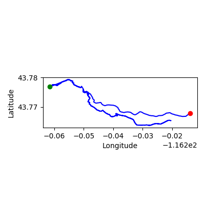
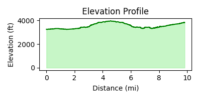
Day 19 - 2024-07-07
- Drive to next trailhead – 35.8 min
-
Part 2: Whistling Pig 1 Loop – 2.3 mi, 1148 ft, 43 min
Park at Whistling Pig 1 Loop (43.77898, -116.25755)
- Start on Whistling Pig 1 (official trail) for 0.9 mi
- Turn straight onto Shooting Range 1 (out-and-back) (official trail) for 0.6 mi
- Turn straight onto Whistling Pig 1 (official trail) for 0.9 mi
Warnings: Repeated segment 872; Repeated segment 912
- Drive to next trailhead – 13.0 min
-
Part 4: Ricochet 1 Loop – 6.2 mi, 3255 ft, 116 min
Park at Ricochet 1 Loop (43.78179, -116.25270)
- Start on Ricochet 1 (official trail) for 0.7 mi
- Turn left onto Spring Creek 1 (official trail) for 0.1 mi
- Turn straight at Junction (Spring Creek 1 × Spring Creek 2) onto Spring Creek 2 (out-and-back) (official trail) for 4.7 mi
- Turn straight onto Spring Creek 1 (official trail) for 0.1 mi
- Turn right onto Ricochet 1 (official trail) for 0.7 mi
Warnings: Repeated segment 845; Repeated segment 879; Repeated segment 928
fits budget
Rationale: Includes drive transfers between trail groups.
- Total Distance: 8.6 mi
- New Distance: 4.3 mi
- Redundant Distance: 4.3 mi (50% )
- Redundant miles (post-optimization): 4.3 mi
- Total Elevation Gain: 4403 ft
- Redundant Elevation Gain: 2201 ft (50% )
- Drive Time: 49 min
- Run Time: 159 min
- Total Time: 208 min
- Number of Activities: 2
- Number of Drives: 2
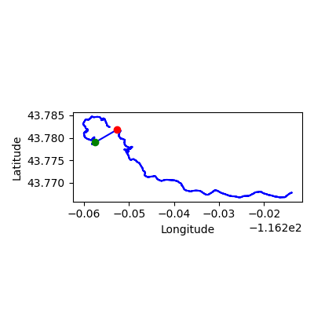
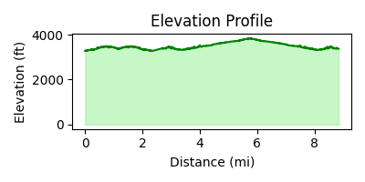
Day 20 - 2024-07-08
- Drive to next trailhead – 37.8 min
-
Part 2: Sweet Connie Trail 3 Loop – 4.5 mi, 2940 ft, 87 min
Park at Sweet Connie Trail 3 Loop (43.74262, -116.14976)
- Start on Sweet Connie Trail 3 (ascent) (official trail) for 4.5 mi
- Drive to next trailhead – 18.7 min
-
Part 4: Sunshine XC 1 Loop – 0.9 mi, 623 ft, 17 min
Park at Sunshine XC 1 Loop (43.76555, -116.09877)
- Start on Sunshine XC 1 (ascent) (official trail) for 0.9 mi
- Drive to next trailhead – 14.8 min
-
Part 6: Around the Mountain Trail 6 Loop – 1.2 mi, 469 ft, 22 min
Park at Around the Mountain Trail 6 Loop (43.77259, -116.10028)
- Start on Around the Mountain Trail 6 (ascent) (official trail) for 1.2 mi
- Drive to next trailhead – 18.1 min
-
Part 8: Lodge Trail 1 Loop – 0.5 mi, 157 ft, 9 min
Park at Lodge Trail 1 Loop (43.77600, -116.09747)
- Start on Lodge Trail 1 (official trail) for 0.5 mi
fits budget
Rationale: Includes drive transfers between trail groups.
- Total Distance: 7.2 mi
- New Distance: 7.2 mi
- Redundant Distance: 0.0 mi (0% )
- Redundant miles (post-optimization): 0.0 mi
- Total Elevation Gain: 4190 ft
- Redundant Elevation Gain: 0 ft (0% )
- Drive Time: 89 min
- Run Time: 135 min
- Total Time: 225 min
- Number of Activities: 4
- Number of Drives: 4
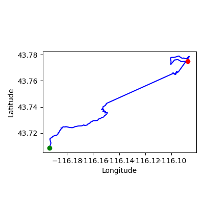
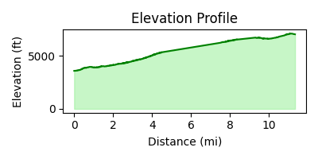
Day 21 - 2024-07-09
- Drive to next trailhead – 40.8 min
-
Part 2: Mahalo Trail 1 Loop – 3.6 mi, 1529 ft, 66 min
Park at Mahalo Trail 1 Loop (43.74405, -116.08594)
- Start on Mahalo Trail 1 (official trail) for 3.6 mi
- Drive to next trailhead – 23.6 min
-
Part 4: The Face Trail 1 Loop – 4.5 mi, 1214 ft, 79 min
Park at The Face Trail 1 Loop (43.77401, -116.09615)
- Start on The Face Trail 1 (official trail) for 1.2 mi
- Turn left at Junction (The Face Trail 1 × Elk Meadows Trail 2) onto Elk Meadows Trail 2 (out-and-back) (official trail) for 2.2 mi
- Turn right onto The Face Trail 1 (official trail) for 1.2 mi
Warnings: Repeated segment 775; Repeated segment 896
-
Part 5: Tempest Trail 2 Loop – 1.6 mi, 755 ft, 30 min
Park at Tempest Trail 2 Loop (43.77401, -116.09615)
- Start on Tempest Trail 2 (out-and-back) (official trail) for 1.0 mi
- Turn left onto Tempest Trail 1 (out-and-back) (official trail) for 0.6 mi
Warnings: Repeated segment 894; Repeated segment 895
fits budget
Rationale: Includes drive transfers between trail groups.
- Total Distance: 9.8 mi
- New Distance: 6.7 mi
- Redundant Distance: 3.1 mi (32% )
- Redundant miles (post-optimization): 3.1 mi
- Total Elevation Gain: 3497 ft
- Redundant Elevation Gain: 984 ft (28% )
- Drive Time: 64 min
- Run Time: 174 min
- Total Time: 239 min
- Number of Activities: 3
- Number of Drives: 2
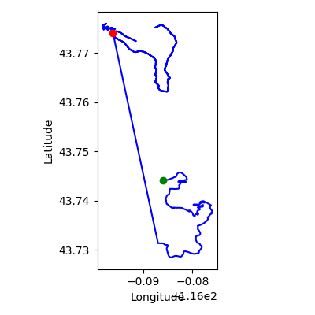
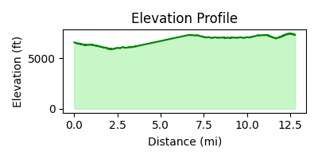
Day 22 - 2024-07-10
- Drive to next trailhead – 42.1 min
-
Part 2: Around the Mountain Trail 3 Loop – 7.4 mi, 3268 ft, 135 min
Park at Around the Mountain Trail 3 Loop (43.74930, -116.09519)
- Start on Around the Mountain Trail 3 (ascent) (official trail) for 2.0 mi
- Turn left at Junction (Around the Mountain Trail 3 × Around the Mountain Trail 4) onto Around the Mountain Trail 4 (ascent) (out-and-back) (official trail) for 3.4 mi – keep uphill
- Turn right onto Around the Mountain Trail 3 (ascent) (official trail) for 2.0 mi – keep uphill
Warnings: Repeated segment 709; Repeated segment 710
- Drive to next trailhead – 28.3 min
-
Part 4: Around the Mountain Trail 5 Loop – 0.4 mi, 213 ft, 8 min
Park at Around the Mountain Trail 5 Loop (43.77868, -116.08606)
- Start on Around the Mountain Trail 5 (ascent) (official trail) for 0.4 mi
fits budget
Rationale: Includes drive transfers between trail groups.
- Total Distance: 7.8 mi
- New Distance: 4.1 mi
- Redundant Distance: 3.7 mi (47% )
- Redundant miles (post-optimization): 3.7 mi
- Total Elevation Gain: 3481 ft
- Redundant Elevation Gain: 1634 ft (47% )
- Drive Time: 70 min
- Run Time: 143 min
- Total Time: 213 min
- Number of Activities: 2
- Number of Drives: 2
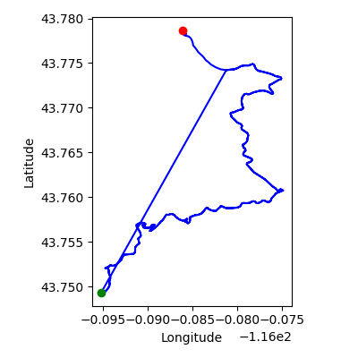
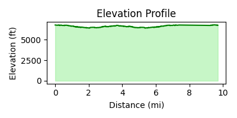
Day 23 - 2024-07-11
- Total Distance: 0.0 mi
- New Distance: 0.0 mi
- Redundant Distance: 0.0 mi (0% )
- Total Elevation Gain: 0 ft
- Redundant Elevation Gain: 0 ft (0% )
- Drive Time: 0 min
- Run Time: 0 min
- Total Time: 0 min
- Number of Activities: 0
- Number of Drives: 0


Day 24 - 2024-07-12
- Total Distance: 0.0 mi
- New Distance: 0.0 mi
- Redundant Distance: 0.0 mi (0% )
- Total Elevation Gain: 0 ft
- Redundant Elevation Gain: 0 ft (0% )
- Drive Time: 0 min
- Run Time: 0 min
- Total Time: 0 min
- Number of Activities: 0
- Number of Drives: 0


Day 25 - 2024-07-13
- Total Distance: 0.0 mi
- New Distance: 0.0 mi
- Redundant Distance: 0.0 mi (0% )
- Total Elevation Gain: 0 ft
- Redundant Elevation Gain: 0 ft (0% )
- Drive Time: 0 min
- Run Time: 0 min
- Total Time: 0 min
- Number of Activities: 0
- Number of Drives: 0


Day 26 - 2024-07-14
- Total Distance: 0.0 mi
- New Distance: 0.0 mi
- Redundant Distance: 0.0 mi (0% )
- Total Elevation Gain: 0 ft
- Redundant Elevation Gain: 0 ft (0% )
- Drive Time: 0 min
- Run Time: 0 min
- Total Time: 0 min
- Number of Activities: 0
- Number of Drives: 0


Totals
- Total Official Challenge Trail Distance (New): 137.5 mi
- Total Official Challenge Trail Distance (Redundant): 126.5 mi
- Total Connector Trail Distance (New): 0.0 mi
- Total Connector Trail Distance (Redundant): 4.0 mi
- Total On-Foot Road Distance: 5.1 mi
- Total On-Foot Distance: 273.1 mi
- Challenge Target Distance: 169.3 mi
- Progress (Distance): 81.2%
- % Over Target Distance: 61.3%
- Efficiency Score (Distance): 62.0
- Challenge Target Elevation: 36000 ft
- Progress (Elevation): 283.7%
- % Over Target Elevation: 183.7%
- Efficiency Score (Elevation): 35.2
- Total Elevation Gain: 102132 ft
- Redundant Elevation Gain: 39969 ft (39% )
- Drive Time: 1270 min
- Run Time: 4860 min
- Total Time: 6130 min